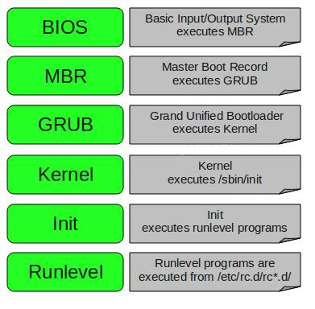

The two stages of bootup are: Getting the hardware to run it's firmware, then getting the Operating System running from a storage device into memory.
In the past the OS was written into the hardware. Early portable OSes were booted from floppy disks. Common storage devices today are Hard Drives or Solid State Drives. With system on a chip (SoC), single board or mobile devices, the OS might be stored directly on the processor chip, or on some other chip based storage like Secure Digital (SD), MultiMediaCard (MMC), or embedded MMC (eMMC).
Power On Self Test (POST). POST checks that the hardware is working correctly. POST will either use a system of beep codes or a display on the motherboard if it runs into errors. The system manufacturer usually provides a table of POST codes to help with trouble shooting.
|  |
Boot order is set from the BIOS "System Setup", traditionally stored in a Complimentary Metal Oxide Semiconductor (CMOS) chip. Systems are moving from CMOS to FLASH to store the BIOS settings. System Setup is sometimes called "CMOS" or "NVRAM".
Control passes to the first block of the primary boot device. Storage drives have been formatted in 512 byte sector blocks. In 2009, Storage started moving to 4096 byte sectors called Advanced Format (AF) or 4K drives, much more efficient in larger capacities. The Master Boot Record (MBR), is being replaced by the GUID Partition Table (GPT) which allows for many more partitions and works with larger storage devices. |
The first block of the boot device contains a partition table and a boot loader program that points to the boot program of the selected Operating System. Windows is called the "Windows Bootloader", Macs use the "Darwin Bootloader", Linux was called Linux Loader (Lilo), but has been replaced by the Grand Unified Bootloader (GRUB).
The Boot loader provides a menu allowing the user to select which Operating System to run on systems that have multiple OSes installed. This process is sometimes called a chainloader or chainloading Operating Systems.
The Operating system start sequences might vary slightly. In Linux, GRUB loads the kernel core into RAM, then runs the initrd (initial ramdisk), which then runs the rest of the Kernel and OS including the real root filesystem, and the runlevel programs from the run command daemon (rc.d).
The GRUB configuration file shows the boot options including the device, the kernel filename (the compressed Linux kernel is called vmlinuz), and the initial ramdisk called initrd.
Do to issues where Windows updates would replace the software boot loader, wiping out any alternative boot options, many dual boot users have switched to installing other OSes like Linux on their own disk, then using the boot order from System Setup to select which disk to boot from.
Users with single disk systems have been using "hosted hypervisors" or Virtual Environment software like VmWare Player or Oracle Virtualbox, to run their OS of choice inside a Virtual Machine.
Hypervisor or virtual machine monitor (VMM) is computer software, firmware or hardware that creates and runs virtual machines. A computer on which a hypervisor runs one or more virtual machines is called a host machine, and each virtual machine is called a guest machine.
The hypervisor presents the guest operating systems with a virtual operating platform and manages the execution of the guest operating systems. Multiple instances of a variety of operating systems may share the vitalized hardware resources: for example, Linux, Windows, and macOS instances can all run on a single physical x86 machine.
This contrasts with operating-system-level Virtualization, where all instances (usually called containers) must share a single kernel, though the guest operating systems can differ in user space, such as different Linux distributions with the same kernel.
The term hypervisor is a variant of supervisor, a traditional term for the kernel of an operating system: the hypervisor is the supervisor of the supervisor.
Native or bare metal Hypervisors run directly on the host's hardware to control the hardware and to manage guest operating systems.
Hosted hypervisors run on a conventional operating system (OS) just as other computer programs do. A guest operating system runs as a process on the host.